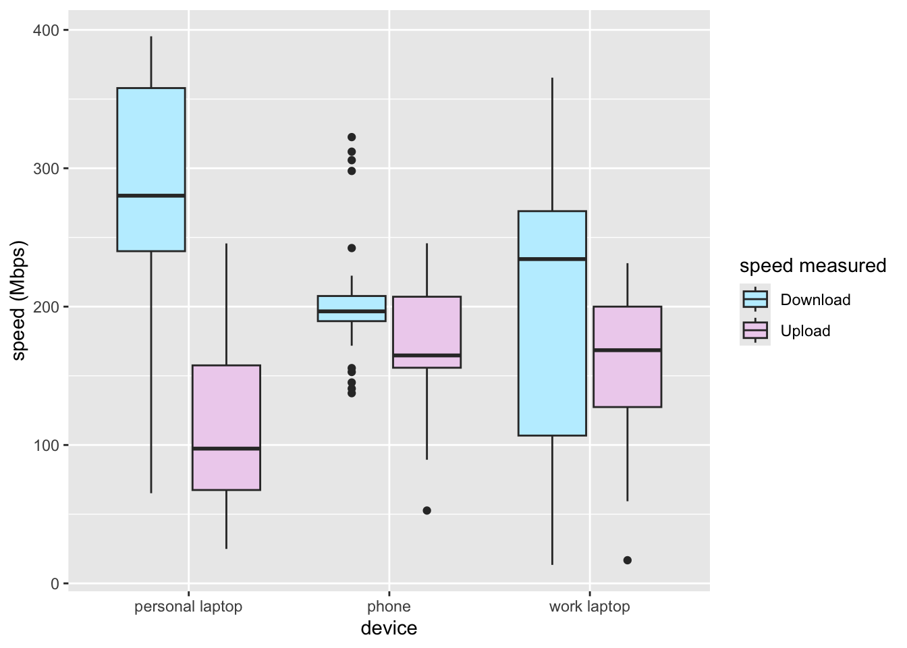

summary <- group_by(data, device) %>%
summarise(
mean_download = mean(Download, na.rm = TRUE),
sd_download = sd(Download, na.rm = TRUE),
mean_upload = mean(Upload, na.rm = TRUE),
sd_upload = sd(Upload, na.rm = TRUE)
)
print(summary)Hyperoptic internet speed
The past week or so has been full of troubleshooting wifi speed problems. Various changes suggested by the Hyperoptic team has not succeeded in bringing my internet speed close to the speed of 1 Gbps prmised in the package I chose.
Most recent suggestion was that I try doing the speedtest on different devices. Perhaps the experts at hyperoptic are baffled their suggestions of trying a different cable or resetting the router are not working. The trouble must be with my device! So this is what I did.
However, I wondered, how will they know if the difference in speed between different devices is significant? Worry not, Hyperoptic. I was trained in statistics, and my passion for R can help us both.
You are welcome.
Create a summary of data
The average speed per device are:
| download | upload | |
|---|---|---|
| personal laptop | 323 Mbps ±60.1 | 148 Mbps ± 48 |
| phone | 16 Mbps ±8.1 | 23 Mbps ± 8 |
| work laptop | 323 Mbps ±48.4 | 146 Mbps ±58 |
Averages are calculated for 10 measurements per device. Standar deviation values are denoted by ±.
Visualise data
@boxplot is a visualisation of the values summarised above.
data_melted <- melt(data, id = "device")
ggplot(data = data_melted) +
geom_boxplot(aes(x = device, y = value, fill = variable)) +
xlab("device") +
ylab("speed (Mbps)") +
labs(fill = "speed measured")
Test the normality of data
Conduct Shapiro test to check normality of data. Non-significant p-values (lower than 0.05) indicate the data is normally distributed.
Download speed:
res_download <- aov(Download ~ device, data = data)
normal_download <- shapiro.test(res_download$residuals)
print(normal_download)
Shapiro-Wilk normality test
data: res_download$residuals
W = 0.94947, p-value = 0.1636The p-value of Shapiro test is 0.164, meaning the data is normally distributed.
Upload speed:
res_upload <- aov(Upload ~ device, data = data)
normal_upload <- shapiro.test(res_upload$residuals)
print(normal_upload)
Shapiro-Wilk normality test
data: res_upload$residuals
W = 0.95231, p-value = 0.1949The p-value of Shapiro test is 0.195, meaning the data is normally distributed.
Check homoscedascidity of data
Conduct Levene’s test to check for homoscedascidity of data.
Download speed:
homoscedasticity_d <- leveneTest(Download ~ factor(device),
data = data)
print(homoscedasticity_d)Levene's Test for Homogeneity of Variance (center = median)
Df F value Pr(>F)
group 2 10.521 0.0004184 ***
27
---
Signif. codes: 0 '***' 0.001 '**' 0.01 '*' 0.05 '.' 0.1 ' ' 1Levene’s test is significant, meaning variances of download speed data across different devices are not equal.
Upload speed:
homoscedasticity_u <- leveneTest(Upload ~ factor(device),
data = data)
print(homoscedasticity_u)Levene's Test for Homogeneity of Variance (center = median)
Df F value Pr(>F)
group 2 13.011 0.0001105 ***
27
---
Signif. codes: 0 '***' 0.001 '**' 0.01 '*' 0.05 '.' 0.1 ' ' 1Levene’s test is significant, meaning our data is heteroscedastic (i.e. variances of upload speed data across different devices are not equal).
ANOVA
Assumptions
The assumption of:
- Normality of data has been met- both download and upload speed values are normally distributed.
- Homoscedasticity has not been met- download and upload speed values have unequal variances between types of device.
- Independence of samples has been met.
Our data is heteroscedastic, and therefore one of the assumptions of ANOVA has been violated, however at this point I don’t have the determination to research bootstrapping methods to corect for this, so i will just proceed with the ANOVA.
Analysis of variance (ANOVA)
Download ANOVA
print(report(res_download))For one-way between subjects designs, partial eta squared is equivalent to eta squared.
Returning eta squared.The ANOVA (formula: Download ~ device) suggests that:
- The main effect of device is statistically significant and large (F(2, 27) = 148.35, p < .001; Eta2 = 0.92, 90% CI [0.86, 0.94])
Effect sizes were labelled following Field's (2013) recommendations.Upload ANOVA
print(report(res_upload))For one-way between subjects designs, partial eta squared is equivalent to eta squared.
Returning eta squared.The ANOVA (formula: Upload ~ device) suggests that:
- The main effect of device is statistically significant and large (F(2, 27) = 26.85, p < .001; Eta2 = 0.67, 90% CI [0.47, 0.77])
Effect sizes were labelled following Field's (2013) recommendations.ANOVA results
There was a main significant effect of device type on both upload and download speed.
To investigate which devices were significantly different from each other I conducted a post hoc test.
Turkey HSD test
Download Turkey
post_test_d <- glht(res_upload,
linfct = mcp(device = "Tukey")
)
print((summary(post_test_d, test = univariate())))
Simultaneous Tests for General Linear Hypotheses
Multiple Comparisons of Means: Tukey Contrasts
Fit: aov(formula = Upload ~ device, data = data)
Linear Hypotheses:
Estimate Std. Error t value Pr(>|t|)
phone - personal laptop == 0 -125.043 19.542 -6.399 7.45e-07 ***
work laptop - personal laptop == 0 -2.093 19.542 -0.107 0.915
work laptop - phone == 0 122.950 19.542 6.292 9.85e-07 ***
---
Signif. codes: 0 '***' 0.001 '**' 0.01 '*' 0.05 '.' 0.1 ' ' 1
(Univariate p values reported)Upload Turkey
post_test_u <- glht(res_upload,
linfct = mcp(device = "Tukey")
)
print((summary(post_test_u, test = univariate())))
Simultaneous Tests for General Linear Hypotheses
Multiple Comparisons of Means: Tukey Contrasts
Fit: aov(formula = Upload ~ device, data = data)
Linear Hypotheses:
Estimate Std. Error t value Pr(>|t|)
phone - personal laptop == 0 -125.043 19.542 -6.399 7.45e-07 ***
work laptop - personal laptop == 0 -2.093 19.542 -0.107 0.915
work laptop - phone == 0 122.950 19.542 6.292 9.85e-07 ***
---
Signif. codes: 0 '***' 0.001 '**' 0.01 '*' 0.05 '.' 0.1 ' ' 1
(Univariate p values reported)Interpretation of results
According to the resulrs of Turkey test:
There is a significant difference in download speed between
phone and personal laptopand betweenphone and work laptop. However, the comparison betweenpersonal laptop and work laptopis not significant.Similarily, there is a significant difference in upload speed between
phone and personal laptopand betweenphone and work laptop. However, the comparison betweenpersonal laptop and work laptopis not significant.